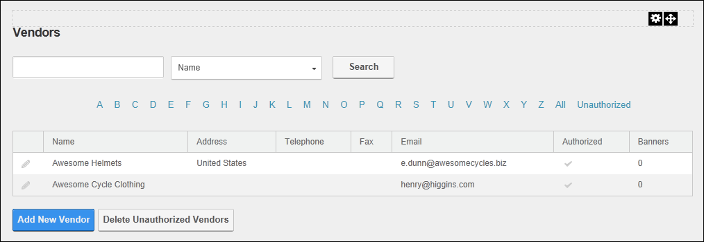

Vendors, located on the Host > Advanced Settings >  Vendors page, allows SuperUsers to manage vendor accounts and advertising banners. Banners managed using this instance of the Vendors module can be displayed on any site within this DNN installation using the Banners module. Banners can also be displayed on pages that have the [BANNER] skin token. Banners can be images, text or script. Each banner record records a number of statistics including tracking of clicks, views and impressions. The Vendors module tracks commission for banner advertising on other sites and commissions received from banner advertisement on this site.
Vendors page, allows SuperUsers to manage vendor accounts and advertising banners. Banners managed using this instance of the Vendors module can be displayed on any site within this DNN installation using the Banners module. Banners can also be displayed on pages that have the [BANNER] skin token. Banners can be images, text or script. Each banner record records a number of statistics including tracking of clicks, views and impressions. The Vendors module tracks commission for banner advertising on other sites and commissions received from banner advertisement on this site.
For details on working with Vendors, see the tutorials in the Admin Console section.
Important. Another instance of Vendors module is located on the Admin > Advanced Settings >  Vendors page. Banners created on the Admin Vendors page are exclusive to that site.
Vendors page. Banners created on the Admin Vendors page are exclusive to that site.

The Vendors Module